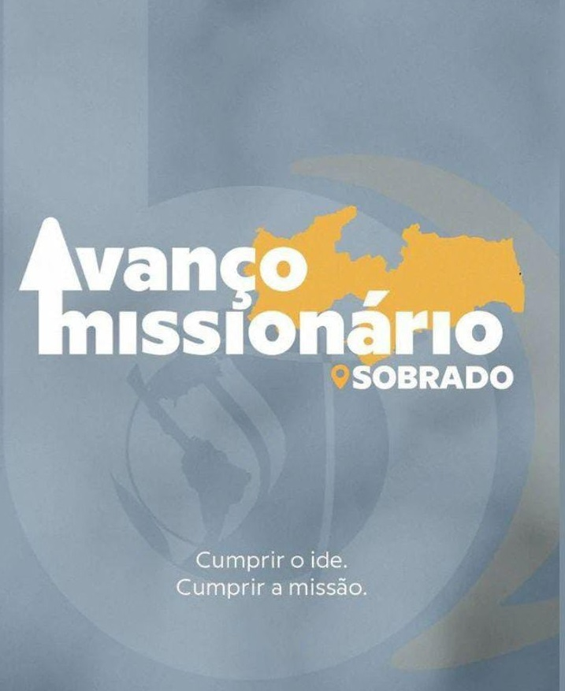

Um evento que vai lhe fazer viajar por vários países e provar algumas de suas comidas típicas.
-
A Feira é uma evento gastronomico, que já se tornou tradicão no Betel Funcionários II.
-
Lembrando que por ser um evento missionário sua arrecadação é voltada ao sustento de missionários no campo.
AVANÇO MISSIONÁRIO

O Avanço Missionário é um projeto fundamentado no evangelismo de porta em porta, cultos públicos
em praças e ginásios, além de ação social.
-
Mobilize-se, reúna familiares e amigos e participe deste evento que contribui para a expansão
da Igreja e do Corpo de Cristo.
-
Acreditamos que é tempo de irmos ao encontro do necessitado, cuidando dos pobres e das viúvas,
sendo Jesus, igreja e corpo vivo de Cristo, de forma prática e relevante.
Fale Conosco
Igreja Betel Brasileiro Funcionarios II
Endereço: R. Cel. João Gadelha de Melo, 35 - Cidade dos Funcionários II, João Pessoa - PB
Horários:
Domingo: 18:30 - Culto de celebração
Terça-feira: 19:00 - Culto de oração
Quarta-feira: 15:00 – Círculo de Oração
Quinta-feira: 19:00 - Culto de doutrina
Sábado: 18:00 – ECB – Escola de Conhecimento Bíblico
.jpeg)